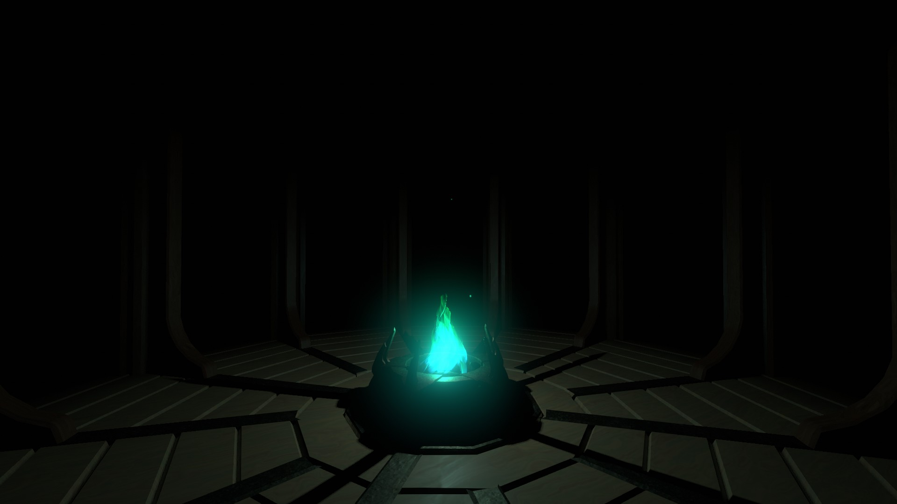
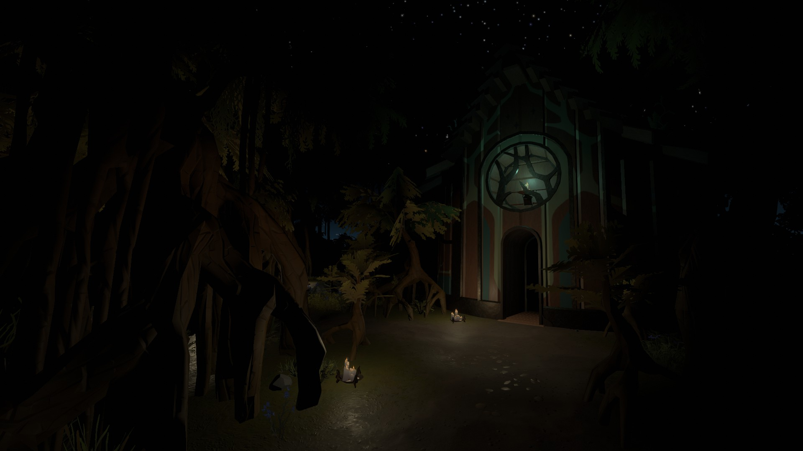
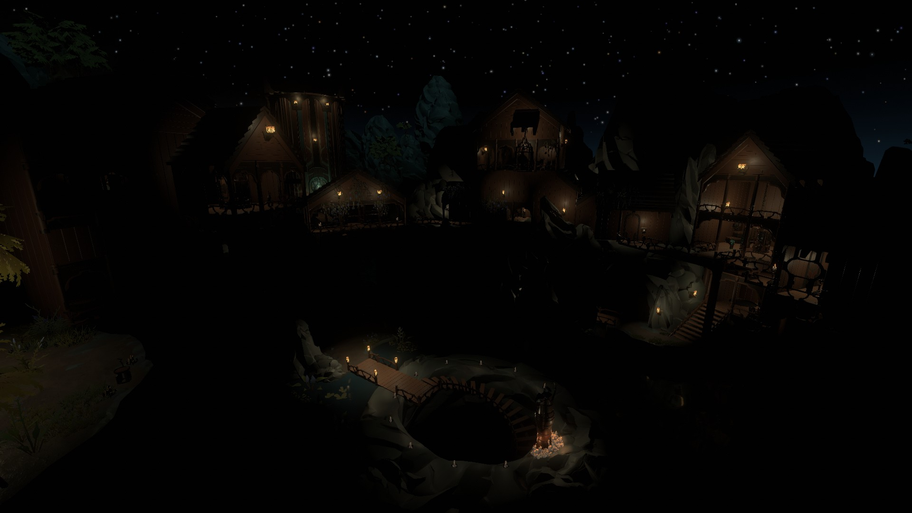
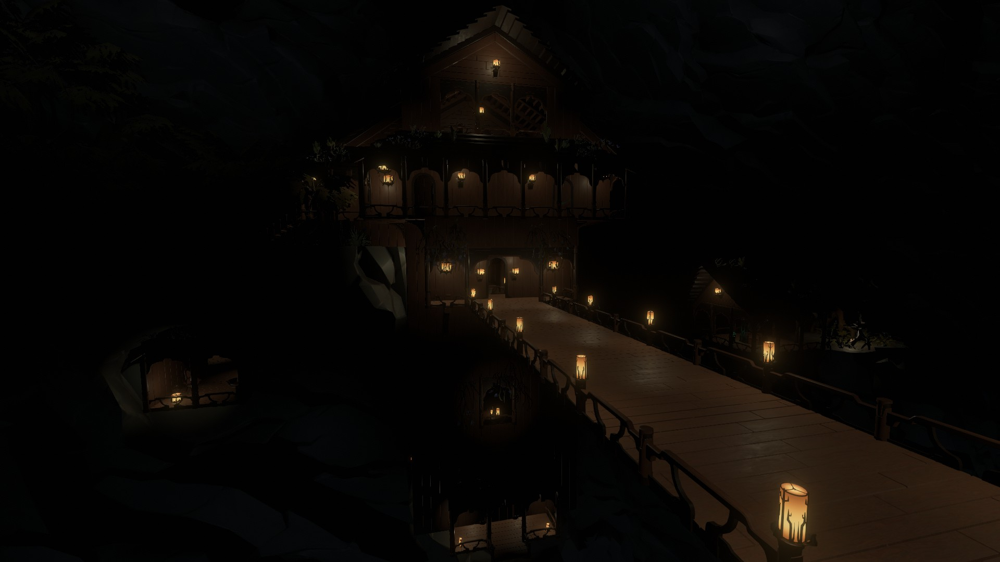
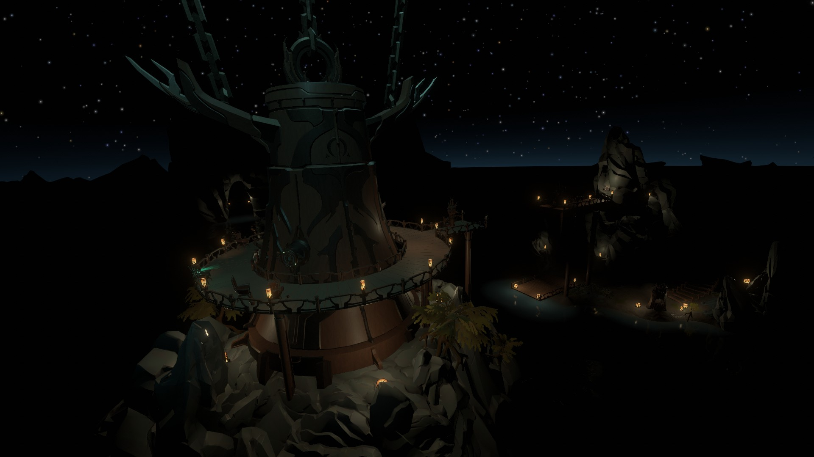

THE STRANGER?

PLACES OF INTEREST
Shrouded Woodlands

The Shrouded Woodlands, accessed through the River Lowlands' mural tower, is an area with a dense forest and a candlelit building where a haunting song can be heard. A covered bridge leads into the darkest part of the forest. Inhabitants of the Stranger walk through this part of the forest, following a secret path to the candlelit building.
Starlit Cove

The Starlit Cove, accessed through the Cinder Isles' mural tower, is a secluded village nestled within a cove. The well at the bottom of the village is guarded by a statue that activates an alarm bell when anyone approaches. The remains of a burned-out building can be found on the outskirts of the village.
Endless Canyon

The Endless Canyon, access through the Hidden Gorge's mural tower, is a massive canyon that stretches into the distance. A candlelit lodge is built into the far cliff face. The lodge has many rooms, some of which that are blocked. In one of the blocked off rooms, an inhabitant can be seeing viewing a slide reel of their home planet.
Submerged Structure

The Submerged Structure is a giant structure that's exterior can only be accessed by travelling on a boat. The interior of the Submerged Structure can be accessed through a similar structure located in the Reservoir. Inside the Submerged Structure is an elevator that leads down into the Subterranean Lake, where the Sealed Vault can be found resting on the shore of the lake. There are three interfaces, each marked with one of the three symbols on the vault's seals.